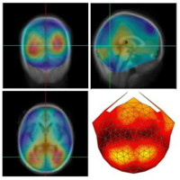
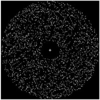
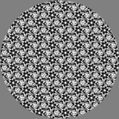
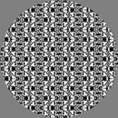

Research
This page describes some of the research the lab group is or has engaged in.
Play & Learning Across a Year (PLAY)

The Play & Learning Across a Year (PLAY) project serves as a model system for doing development science from a “big” data approach. Natural free play represents the foundation of infant learning, but we know little about how infants play, how play unfolds in real time and across development, and how individual and group differences promote infant learning and development through play. To answer these questions, the PLAY project will collect, code, and share 900 hours of video collected in the homes of children at 12, 18, and 24 months of age drawn from 30 sites across North America.
The aim of the project is to develop a new approach to developmental science that enables (1) “big” data science for researchers who would not otherwise have access; (2) a communal, low-cost means of collecting and coding data that retains the autonomy of individual labs; and (3) a plan for leveraging diverse expertise to address a common goal.
Publications
Soska, K.C., Xu, M., Gonzalez, S.L., Herzberg, O., Tamis-LeMonda, C.S., Gilmore, R.O., & Adolph, K.E. (2021). (Hyper)active data curation: A video case study from behavioral science. Journal of eScience Librarianship, 10(3), e1208. https://doi.org/10.7191/jeslib.2021.1208.
Presentations
Gilmore, R.O., Jayaraman, S., Hassan, S., & Lingeman, J. (2020, July). Tools for reproducible developmental science. Poster to be presented at the 2020 International Congress on Infant Studies, Glasgow, Scotland.
Adolph, K.E., Tamis-LeMonda, C., & Gilmore, R.O. (2016, December 16). Video-based communal data collection & coding: Advancing the science of infant learning & development. A workshop held at the Eunice Kennedy Shriver National Institute of Child Health and Human Development. Video Cast. Materials & data.
Materials
Gilmore, R.O. (2017). PLAY-behaviorome. Github code repository. Retrieved December 19, 2017 from https://github.com/PLAY-behaviorome/.
Adolph, K., Tamis-LeMonda, C. & Gilmore, R.O. (2017). PLAY Pilot Data Collections. Databrary. Retrieved December 19, 2017 from https://nyu.databrary.org/volume/444.
Adolph, K., Tamis-LeMonda, C. & Gilmore, R.O. (2016). PLAY Project: Materials. Databrary. Retrieved December 19, 2017 from https://nyu.databrary.org/volume/254.
Adolph, K., Tamis-LeMonda, C. & Gilmore, R.O. (2016). PLAY Project: Webinar discussions on protocol and coding. Databrary. Retrieved December 19, 2017 from https://nyu.databrary.org/volume/232.
Role
- Serve as Co-PI and head of data science.
Collaborators
- Karen Adolph, New York University, Co-Principal Investigator.
- Catherine Tamis-LeMonda, New York University, Co-Principal Investigator.
- Kasey Soska, New York University, Scientific Director.
Support
PLAY is supported by grants from the Office of the Director, National Institutes of Health, (OD), Eunice Kennedy Shriver National Institute for Child Health and Human Development (NICHD), the National Institute of Mental Health (NIMH), and the National Institute on Drug Abuse (NIDA) under R01HD094830-01, the LEGO Foundation, and the Alfred P. Sloan Foundation.
Open Science
The social, behavioral, and neural sciences face more difficult scientific challenges than any other field has faced before. Open, transparent, and reproducible scientific practices are essential for accelerating discovery in these fields. My colleagues and I are developing policies for the ethical and secure sharing of personal data and technologies to allow the analysis and sharing of these data for scientific and educational purposes.
Publications
Soska, K.C., Xu, M., Gonzalez, S.L., Herzberg, O., Tamis-LeMonda, C.S., Gilmore, R.O., & Adolph, K.E. (2021). (Hyper)active data curation: A video case study from behavioral science. Journal of eScience Librarianship, 10(3), e1208. https://doi.org/10.7191/jeslib.2021.1208.
Gilmore, R.O., & Qian, Y. (2021). An open developmental science will be more rigorous, robust, and impactful. Infant and Child Development. https://doi.org/10.1002/icd.2254.
Gilmore, R.O., Xu, M., & Adolph, K.E. (2021). Data sharing. In Panecker, S. & Stanley, B. (Eds.), Handbook of Research Ethics in Psychological Science, APA Press, Washington, DC. PDF.
Gilmore, R.O., Cole, P.M., van Aken, M.A.G., Verma S., & Worthman, C.M. (2020). Advancing scientific integrity, transparency, and openness in child development research: Challenges and possible solutions. Child Development Perspectives, 14(1), 9-14. http://dx.doi.org/10.1111/cdep.12360
Ossmy O., Gilmore R.O., Adolph K.E. (2020) AutoViDev: A Computer-Vision Framework to Enhance and Accelerate Research in Human Development. In: Arai K., Kapoor S. (eds) Advances in Computer Vision. CVC 2019. Advances in Intelligent Systems and Computing, vol 944. Springer, Cham. doi: 10.1007/978-3-030-17798-0_14
Gilmore, R. O., Kennedy, J. L., & Adolph, K. E. (2018). Practical solutions for sharing data and materials From psychological research. Advances in Methods and Practices in Psychological Science, SAGE Publications Inc. Retrieved from https://doi.org/10.1177/2515245917746500. OSF preprint.
Gilmore, R.O., Diaz, M.T., Wyble, B.A., & Yarkoni, T. (2017). Progress toward openness, transparency, and reproducibility in cognitive neuroscience. Annals of the New York Academy of Sciences, 1396, 5–18. doi: 10.1111/nyas.13325.
Gilmore, R.O. (2016). From big data to deep insight in developmental science. Wiley Interdisciplinary Reviews Cognitive Science. DOI: 10.1002/wcs.1379.
Presentations
Gilmore, R.O., Wham, B., & Zinoble, R. (2021, October). Getting ahead of the curve: Responding to emerging data management plan requirements. Presentation as part of the Open Data & Developmental Science (ODDS) Initiative. slides.
Gilmore, R.O. (2021, April). Invited panel presentation to “Changing the Culture of Data Management and Sharing: A Workshop”, National Academies of Science, Engineering, and Medicine.
Gilmore, R.O. (2021, January). “The Human Behaviorome Project”, Invited presentation to the Networking and Information Technology Research and Development (NITRD) workshop on the Future of Federally Supported Data Repositories.
Gilmore, R.O. (2020, September). Invited presentation at FLUX Preconference Workshop on Infant Neuroimaging.
Gilmore, R.O. (2020, May 23). Invited symposium presentation on Open Science for Different Methodological Approaches in Psychology, 2020 meeting of the Association for Psychological Science, Chicago, IL. Cancelled.
Gilmore, R.O. (2020, April 15). The open science revolution: A report from the front lines. Talk given in the Penn State Data Studies Group. slides.
Gilmore, R.O. (2020, February 21). Research computing in child development research. Invited talk to the Penn State Child Study Center. slides.
Gilmore, R.O. (2019, June 3). Making cognitive science even better. Talk given at the James S. McDonnell Foundation retreat. slides.
Gilmore, R.O. (2019, March 28). The whole elephant. Talk given at the Penn State Center for Neural Engineering (CNE) colloquium series. slides.
Gilmore, R.O., Gennetian, L., Kalish, C., Tamis-LeMonda, C.T., & Worthman, C. (2019, March). What SRCD is doing about open science: A conversation hour. Presentation at the 2019 Society for Research in Child Development (SRCD) meeting, Baltimore, MD. slides.
Gilmore, R.O. (2019, January). An open science of human health & behavior. Invited talk given to the College of Health & Human Development. HTML slides.
Gilmore, R.O. (2018, October). The Open Data and Developmental Science (ODDS) Initiative. Invited talk at the Penn State Child Study Center (CSC). HTML slides.
Gilmore, R.O. (2018, October). The promise of open developmental science. Invited talk at the SRCD Conference on the Use of Secondary and Open Source Data in Developmental Science. Phoenix, AZ. HTML slides
Gilmore, R.O. (2018, September). Big data behavioral science: From micro- to macro-scale. Annual Conference of the Federal Statistical Research Data Centers. University Park, PA. HTML slides
Gilmore, R.O. (2018, May). Open, says me: Practical solutions for sharing data and materials. Invited talk at the Association for Psychological Science 2018 meeting. San Francisco, CA. HTML slides
Gilmore, R.O. (2017, September 29). Data sharing, research ethics, & scientific reproducibility. Talk at the Scholarship and Research Integrity (SARI) workshop series, Penn State. HTML slides.
Gilmore, R.O. (2017, September 7). Reproducibility in computationally intensive behavioral research. Talk at the ACI-ICS seminar series, Penn State. HTML slides.
Software
databraryapi, an R package for Databrary. https://github.com/PLAY-behaviorome/databraryapi.
databrarypy, a Python package for Databrary. https://github.com/PLAY-behaviorome/databrarypy.
Roles
- Chaired Society for Research in Child Development (SRCD) Task Force on Scientific Integrity and Openness (2018-2019) that drafted a Policy on Scientific Integrity, Transparency, and Openness and author guidelines.
- Lead the Open Data & Developmental Science (ODDS) initiative for the Penn State Child Study Center.
- Co-lead R Bootcamp workshop for Penn State graduate students, postdocs, and faculty. 2019 course site, 2018 course site.
Collaborators
- Karen Adolph, New York University, Co-Principal Investigator and Project Director.
- Ori Ossmy, New York University
- Jeff Spies, 221b.io
Databrary

The Databrary Project aims to increase scientific transparency and accelerate discovery in developmental science by building infrastructure for researchers to share video data and related meta-data. The project has five specific aims:
- Create a web-based data library for sharing and preserving video data and associated meta-data.
- Create participant and contributor/user standards that enable open sharing of video data while limiting access to authorized users to ensure participant confidentiality.
- Expand the free, open source video coding software, Datavyu to enable coding, exploring, and analyzing video data.
- Build a data management system to support data sharing within labs, among collaborators, and in the Databrary repository.
- Transform the culture of developmental science by building a community of researchers committed to open video data sharing.
Databrary is an open-source software project. Penn State is one of the major “nodes”, with a large number of authorized users.
Publications
Gilmore, R.O., Xu, M., & Adolph, K.E. (2021). Data sharing. In Panecker, S. & Stanley, B. (Eds.), Handbook of Research Ethics in Psychological Science, APA Press, Washington, DC.
Gilmore, R. O. & Adolph, K. E. (2019). Open sharing of research video: Breaking down the boundaries of the research team. In , K. L. Hall, A. L. Vogel, & R. T. Croyle (Eds.), Strategies for team science success: Handbook of evidence-based principles for cross-disciplinary science and practical lessons learned from health researchers. Cham: Springer, pp. 575-583.
Gilmore, R. O., Kennedy, J. L., & Adolph, K. E. (2018). Practical solutions for sharing data and materials From psychological research. Advances in Methods and Practices in Psychological Science, SAGE Publications Inc. Retrieved from https://doi.org/10.1177/2515245917746500. OSF preprint.
Adolph, K.E., Gilmore, R.O., & Kennedy, J.L. (2017, October). Video data and documentation will improve psychological science. Psychological Science Agenda. http://www.apa.org/science/about/psa/2017/10/video-data.aspx
Gilmore, R. O., Kennedy, J. L., & Adolph, K. E. (2017, September 7). Practical solutions for the ethical sharing of identifiable research data. Retrieved from http://psyarxiv.com/kew8u.
Gilmore, R.O. & Adolph, K.E. (2017). Video can make behavioural science more reproducible. Nature Human Behaviour. doi:10.1038/s41562-017-0128.
Gilmore, R.O., & Adolph, K.E. (2017, February 6). Video can make science more open, transparent, robust, and reproducible. Retrieved from http://osf.io/3kvp7.
Gilmore, R.O., Adolph, K.E., Millman, D.S. (2016). Curating identifiable data for sharing: The Databrary project. In Proceedings of the 2016 New York Scientific Data Summit. PDF of paper.
Gilmore, R.O., Adolph, K.E., Millman, D.S., & Gordon, A. (2016). Transforming education research through open video data sharing. Advances in Engineering Education, 5(2). HTML.
Gordon, A., Millman, D.S., Steiger, L., Adolph, K.E., & Gilmore, R.O. (2015). Researcher-library collaborations: Data repositories as a service for researchers. Journal of Librarianship and Scholarly Communication. doi:10.7710/2162-3309.1238.
Adolph, K.E., Gilmore, R.O., Freeman, C., Sanderson, P., & Millman, D. (2012). Toward Open Behavioral Science, Psychological Inquiry: An International Journal for the Advancement of Psychological Theory, 23(3), 244-247. doi:10.1080/1047840X.2012.705133.
Presentations
Gilmore, R.O. (2019, June 6). Video as data and documentation. Workshop at a Symposium Honoring Brian MacWhinney, Carnegie Mellon University, Pittsburgh, PA. slides.
Gilmore, R.O. (2018, October). Sharing video data. Data blitz talk at the SRCD Conference on the Use of Secondary and Open Source Data in Developmental Science. Phoenix, AZ. HTML slides
Gilmore, R.O., Adolph, K.E., & Seisler, A.S. (2018, October). Sharing nicely with others: Moving developmental scientists toward open data sharing. Poster presented at the SRCD Conference on the Use of Secondary and Open Source Data in Developmental Science. Phoenix, AZ. PDF.
Gilmore, R.O. (2018, April 25). Video as data and documentation. Talk in the Department of Communication Arts & Sciences, Penn State. HTML slides
Gilmore, R.O. (2018, February 14). The future of quantitative developmental science. Talk given at the Quantitative Developmental Methodology brown bag series. HTML slides.
Gilmore, R.O. (2018, January 31). Introducing Databrary. Talk given at the Penn State Software in the Humanities & Social Sciences workshop. HTML slides.
Gilmore, R.O. (2018, January 26). The Video DatAbservatory: A platform for behavioral discovery. Talk at the Pathways to Competence initiative meeting of the Penn State Child Study Center. HTML slides.
Gilmore, R.O. (2017, August 1). Video can improve the reproducibility of psychological science. Lightning talk at the Society for Improving Psychological Science meeting, Charlottesville, VA. HTML slides
Gilmore, R.O. (2017, July 31). Beyond physics envy: Toward a databservatory for human behavior. Lightning talk at the Society for Improving Psychological Science meeting, Charlottesville, VA. HTML slides.
Gilmore, R.O. & Nilsonne, G. (2017, July 30). IRBs and the ethical sharing of research data. Talk given at the Society for Improving Psychological Science meeting, Charlottesville, VA. HTML slides. OSF project.
Gilmore, R.O. (2017, July 26). Yes, we can. Invited panelist at the AERA Workshop on Data Sharing and Research Transparency at the Article Publishing Stage. HTML slides.
Gilmore, R.O. (2017, July 10). The reproducibility crisis in psychology & neuroscience. Talk given at the Penn State Data Reproducibility Bootcamp. HTML slides.
Adolph, K.E., Binion, G. Gilmore, R.O., Oakes, L., & Vazire, S. (2017, April 6). Openness, replication, & data reuse in developmental science – unique challenges, existing resources, & what is still needed. Invited roundtable at the Society for Research in Child Development meeting, Austin, TX.
Gilmore, R.O. (2017, February 22). A Databservatory for human behavior. Talk given at the Cognitive Area Brown Bag. HTML slides.
Gilmore, R.O. (2017, January 31). An -ome of our own: Toward a more reproducible, robust, and insightful science of human behavior. Talk given to the Social Data Analytics (SoDA) 501 students. Penn State University. HTML slides
Gilmore, R.O. (2016, October). The future of big data in developmental science. Talk given at a meeting of the Penn State Child Study Center (CSC) faculty. HTML slides.
Gilmore, R.O. (2016, September). Donald Rumsfeld and the promise of a ‘big data’ science of human behavior. Talk given at a meeting of the Stochastic Modeling and Computational Statistics (SMACS) group, Department of Statistics. HTML slides.
Gilmore, R.O., Adolph, K.E., & Millman, D.S. (2016, August). Curating identifiable data for sharing: The Databrary project. In Proceedings of the 2016 New York Scientific Data Summit. HTML slides. PDF of paper.
Gilmore, R.O., Adolph, K.E., & Millman, D. (2016, May). Video doesn’t lie: Reproducible workflows with Databrary. Talk given at the NYU Data Science Center Symposium on Reproducibility. HTML slides
Gilmore, R.O., Adolph, K.E., Millman, D.S., Steiger, L., & Simon, D.A. (2015, May). Sharing displays and data from vision science research with Databrary. Poster presented at the Vision Sciences Society meeting, St. Pete Beach, FL. PDF.
Simon, D.A., Gordon, A.S., Steiger, L., & Gilmore, R.O. (2015, June). Databrary: Enabling sharing and reuse of research video. Proceedings of the 15th ACM/IEEE-CS Joint Conference on Digital Libraries, Knoxville, TN. doi:10.1145/2756406.2756951
Role
- Serve as co-founder and co-director.
Collaborators
- Karen Adolph, New York University, Co-Principal Investigator and Project Director.
Support
This project is supported by the U.S. National Science Foundation (NSF) Grant No. BCS-1238599, the Eunice Kennedy Shriver National Institute of Child Health and Human Development under Cooperative Agreement 1-U01-HD-076595-01, the Society for Research in Child Development, the LEGO Foundation, the Alfred P. Sloan Foundation, and the James S. McDonnell Foundation.
Sex Differences in Visual Perception

Previous research has shown that males and females differ on a number of psychological dimensions, including some basic aspects of visual processing. We are exploring the extent to which low-level visual dimensions of visual processing correlate with one another and with higher order characteristics like spatial cognition and hobby choices.
Role
- Co-Investigator
Materials
Collaborators
- Sheri Berenbaum, Ph.D., Penn State
- Yiming Qian, Ph.D., UC Davis
Publications
Qian, Y., Berenbaum, S. A., & Gilmore, R. O. (2022). Vision contributes to sex differences in spatial cognition and activity interests. Scientific Reports, 12(1), 17623. https://doi.org/10.1038/s41598-022-22269-y
Behavioral Analysis through Video (BehAV.ai)
AI and computer vision tools are increasingly useful in basic and applied behavioral science. This project aims to provide a set of tools based on open source algorithms and models that empowers non-specialists to exploit advances in these areas.
Materials
Role
- Principal Investigator
Collaborators
- Dan Albohn, Penn State Department of Psychology
- Kory Blose, Penn State Applied Research Lab
- Stephen Fast, Penn State Applied Research Lab
- Ori Ossmy, New York University
- Drew Polasky, Penn State Institute for Cyberscience
Developmental Dynamics of Optic Flow Processing
 
Visual motion provides humans and animals with information about their own movement through 3D space and about the structure of the environment – the objects, surfaces, and other animals that it may contain. How the human brain processes complex motion information poses an as-yet unanswered question. This project focuses on characterizing how sensitivity to visual motion emerges in the developing human brain: how brain (EEG) responses to patterns of ego- and object motion emerge, how they develop from infancy through childhood into adulthood, how specific changes in cortical circuitry might account for the observed patterns, and how behavioral sensitivity to motion corresponds to neural activation. The studies compare brain responses and behavioral discrimination patterns in infants, children, and adults to the same types of ego- and object motion. The studies also involve an effort to measure or simulate the statistics of optic flow experienced by infant, child, and adult observers in complex, natural environments using computer vision methods.
Publications
Qian, Y., Seisler, A.R., & Gilmore, R.O. (in press). Children’s sensitivity to optic flow-like visual motion differs from adults. Developmental Psychology. GitHub repository at https://github.com/gilmore-lab/sex-differences-in-motion-perception
Gilmore, R.O., Thomas, A.L., & Fesi, J.D (2016). Children’s brain responses to optic flow vary by pattern type and motion speed. PLoS ONE. doi: 10.1371/journal.pone.0157911. Materials on Databrary at http://doi.org/10.17910/B7QG6W.
Gilmore, R.O., Raudies, F., & Jayaraman, S. (2015). What Accounts for Developmental Shifts in Optic Flow Sensitivity? Proceedings of the IEEE International Conference on Development and Learning and Epigenetic Robotics. doi:10.1109/DEVLRN.2015.7345450. Materials on Databrary at doi:10.17910/B7988V.
Fesi, J.F., Thomas, A.L., & Gilmore, R.O. (2014). Cortical responses to optic flow and motion contrast across patterns and speeds. Vision Research, 100, 56–71. doi:10.1016/j.visres.2014.04.004. Materials on Databrary.
Raudies, F. & Gilmore, R.O. (2014). Visual motion priors differ for infants and mothers. Neural Computation, 26(11), 2652-2668. doi:10.1162/NECO_a_00645.
Raudies, F., Gilmore, R.O., Kretch, K.S., Franchak, J.M, & Adolph, K.E. (2012). Understanding the development of motion processing by characterizing optic flow experienced by infants and their mothers. Proceedings of the IEEE International Conference on Development and Learning. doi:10.1109/DevLrn.2012.6400584.
Presentations
Gilmore, R.O. (2018, February 24). The development of perception for action. Data blitz talk at the Developmental Area graduate recruiting weekend. HTML slides.
Gilmore, R.O., Seisler, A., Shade, M., O’Neill, M. (2017, April). School-age children perceive fast radial optic flow in noise more accurately than slow linear flow. Poster presentation at the Society for Research in Child Development, Austin, TX. PDF. Databrary. GitHub.
Gilmore, R.O. (2017, February). Go with the flow: The development of behavioral sensitivity and brain responses to optic flow. Talk at Temple University. HTML slides. Markdown.
Gilmore, R.O., Fared, D.A., Dexheimer, M.G., & Seisler, A.R. (2016, November). The appearance and disappearance of visual forms defined by differential motion evokes distinctive EEG responses in school-age children. Presentation at the Society for Neuroscience meeting in San Diego, CA. PDF.
Gilmore, R.O. (2016, October). Go with the flow: The development of behavioral sensitivity and brain responses to optic flow. Talk at the Penn State Action club meeting. HTML slides.
Jayaraman, S., Gilmore, R.O., & Raudies, F. (2016, May). Changes in early optic flow experiences across development and culture. Talk at the International Congress on Infant Studies (ICIS) in New Orleans, LA. HTML slides.
Gilmore, R.O. (2016, September). Open science practices have made my work better. Talk at the Penn State Psychology Cognitive Area brown bag. HTML slides.
Adamiak, W., Thomas, A.L., Patel, S.M., & Gilmore. R.O. (2015, May). Adult observers’ sensitivity to optic flow varies by pattern and speed. Poster presented at the Vision Sciences Society meeting, St. Pete’s Beach, FL. doi:10.1167/15.12.1008. PDF. Materials on Databrary.
Raudies, F. & Gilmore, R.O. (2014, May). An analysis of optic flow experienced by infants during natural activities. Poster presented at the Vision Sciences Society meeting, St. Pete Beach, FL. Journal of Vision, 14(10). 226. doi:10.1167/14.10.226. PDF
Thomas, A.L., Fesi, J.D. & Gilmore, R.O. (2014, May). Temporal and speed tuning in brain responses to local and global motion patterns. Poster presented at the Vision Sciences Society meeting, St. Pete Beach, FL. Journal of Vision, 14(10). 482. doi:10.1167/14.10.482.
Fesi, J.D., Thomas, A.L., & Gilmore, R.O. (2012, October). Distinct space-time sampling thresholds of VEP responses to optic flow. Poster presented at the Society for Neuroscience meeting, New Orleans, LA. PDF
Gilmore, R.O., Raudies, F., Kretch, K.S., Franchak, J.M., & Adolph, K.E. (2012, June). Do you see what I see? Comparing optic flow experienced by infants and their mothers. Poster presented at the International Conference on Infant Studies, Minneapolis, MN. PDF.
Fesi, J.D., Stiffler, J.R., & Gilmore, R.O. (2012, May). Speed tuning of cortical responses to 2D figures defined by motion contrast is non-uniform across contrast types. Poster presented at the Vision Sciences Society meeting, Naples, FL.
Thomas, A.L., Mancino, A.C., Elnathan, H.C., Fesi, J.D., Hwang, K.R., & Gilmore, R.O. (2012, May). Children’s cortical responses to optic flow patterns show differential tuning by pattern type, speed, scalp location, and age group. Poster presented at the Vision Sciences Society meeting, Naples, FL. PDF.
Gilmore, R.O., Raudies, F., Kretch, K.S., Franchak, J.M., & Adolph, K.E. (2012, May). Patterns of optic flow experienced by infants and their mothers during locomotion. Poster presented at the Vision Sciences Society meeting, Naples, FL. PDF.
Raudies, F., Kretch, K.S., Franchak, J.M., Mingolla, E., Gilmore, R.O., & Adolph, K.E. (2012, May). Where do mothers point their head when they walk and where do babies point their head when they are carried? Poster presented at the Vision Sciences Society meeting, Naples, FL. PDF.
Materials
Role
- Principal Investigator
Collaborators
- Florian Raudies, Hewlett-Packard Research
- Swapnaa Jayaraman, Indiana University
- Amanda Thomas, Swarthmore College
- Jeremy Fesi, U.S. Marine Research
Support
This project was supported by the National Science Foundation under grant BCS-1147440.
Eye Tracking Technologies to Characterize and Optimize Visual Attending in Down Syndrome
Down Syndrome (DS) is the most common known genetic origin of intellectual disability and has an estimated incidence of 1 in every 1000 live births. Such children face unique challenges as they enter into the school years, because the speech that was previously adequate for communication with familiar partners in supportive settings is often not sufficient for academic communication with unfamiliar partners. Indeed, 95% of parents surveyed reported that their children with DS had difficulty being understood by persons outside their immediate social circle (Kumin, 1994). This has significant implications for academic, social, and vocational success; children with limited language skills are at risk of falling behind nondisabled peers academically and experiencing social isolation. Secondary issues often arise when children experience frustration in communication, commonly in the form of challenging behaviors. All aspects of development are further compromised when these behaviors involve aggression toward others, have significant health implications when they are self-injurious, and exacerbate service costs when they necessitate extensive behavior management plans. Children with DS are in desperate need of communication interventions that provide them with the tools to succeed throughout the school years. One form of intervention is called aided augmentative and alternative communication (AAC). In typical clinical applications, aided AAC systems employ picture books, tablet-style computers that present the user with graphic symbols, and sometimes text or synthesized voice output. Because AAC relies on vision rather than sound/speech for access to the communication messages, it is critical to map out how children with DS examine and extract information from visual AAC displays. Otherwise there is the risk of implementing systems that are poorly matched to children’s skills and needs, a practice that in turn results in limited use or abandonment of the system. Few current AAC designs consider the fit between the system and the visual processing skills of users, and most are uninformed by empirical knowledge about human visual information processing. Moreover, little is known about visual processing in persons with significant communication limitations associated with DS. This research aims to improve the design of AAC displays through characterization of visual attention patterns to different AAC displays and their effects on functional use. Eye tracking - rarely used in DS - will reveal attention patterns/processes that typically go unrecorded in behavioral research. Our three-phase program will begin with eye tracking studies of visual attention under largely non-social laboratory conditions. In the next phase, we will introduce social interactions and record gaze path using mobile eye tracking technology. In the final phase, we will translate the knowledge gained in the laboratory studies to optimize functional communication in individuals with DS in performing tasks that represent typical daily life activities.
Role
- Co-Investigator
Collaborators
- Krista Wilkinson, Penn State, Principal Investigator
Materials
Gilmore, R.O. (2017). Wilkinson-lab. Code repository on GitHub. Retrieved December 19, 2017 from https://github.com/gilmore-lab/wilkinson-lab.
Gilmore, R.O. (2017). Eye-tracking-DS. Code repository on GitHub. Retrieved December 19, 2017 from https://github.com/gilmore-lab/eye-tracking-DS.
Support
The project is supported by NICHD under R01HD083381-02.
Publications
Wilkinson, K.M., Gilmore, R.O., & Qian, Y. (submitted). Judicious arrangement of symbols on a simulated AAC display optimizes visual attention by individuals with and without Down syndrome. Journal of Speech, Language, and Hearing Research.
The Proximal Emotional Environment Project (PEEP)
A 5-year-old overhears her parents arguing loudly in the next room. She may not understand why they are arguing, but she realizes something is wrong because she perceives anger in their voices. Exposure to interpersonal conflict is consistently associated with less skillful emotion regulation in children although the mechanisms remain to be explained. Because inter-personal conflict is a heterogeneous phenomenon, investigation of the specific features of conflict that contribute to developmental pathways to emotional dysfunction and symptoms requires a process-oriented approach. In this project, we focus on brain responses to angry prosody in natural speech. We are studying young children’s neural processing of angry prosody, spoken by mothers and strangers, as a first step toward a future longitudinal study investigating how the neurocognitive processing of angry prosody mediates relations between conflict exposure in children and the development of anxiety- and anger-related symptoms.
Publications
Liu, P., Cole, P.M., Gilmore, R.O., Pérez-Edgar, K.E., Vigeant, M.C., Moriarty, P., Scherf, K.S. (in press). Young children’s neural processing of their mother’s voice: An fMRI study. Neuropsychologia. doi: 10.1016/j.neuropsychologia.2018.12.003.
Moriarty, P. M., Vigeant, M. C., Liu, P., Gilmore, R., Wolf, R., & Cole, P. M. (2016). Low frequency analysis of acoustical parameters of emotional speech for use with functional magnetic resonance imaging. The Journal of the Acoustical Society of America, 140(4), 3237–3238. Acoustical Society of America. Retrieved from https://doi.org/10.1121/1.4970240
Maggi, M., Cole, P., Elbich, D., Gilmore, R.O., Pérez–Edgar, K., Scherf, K.S. (in prep). Hearing emotions: School-aged children’s neural processing of the human voice and affective prosody.
Presentations
Stoop, T.B., Moriarty, P.M., Wolf, R., Gilmore, R.O., Perez-Edgar, K., Scherf, S, Vigeant, M.C., & Cole, P.M. (in press). I know that voice! Mothers’ voices influence children’s perceptions of emotional intensity. Journal of Experimental Child Psychology.
Liu, P., Cole, P.M., Gilmore, R.O., Pérez-Edgar, K.E., Vigeant, M.C., Moriarty, P., Scherf, K.S. (2019). Young children’s neural processing of their mother’s voice: An fMRI study. Neuropsychologia, 122, 11-19. doi: 10.1016/j.neuropsychologia.2018.12.003.
Moriarty, P., Vigeant, M., Liu, P. Gilmore, R.O, & Cole, P.M. (submitted) Comparing theory, consensus, and perception to the acoustics of emotional speech.
Moriarty, P.M., Vigeant, M., Wolf, R., Gilmore, R., & Cole, P. (2018). Creation and characterization of an emotional speech database. The Journal of the Acoustical Society of America, 143(3), 1869–1869. ASA. Retrieved from https://asa.scitation.org/doi/abs/10.1121/1.5036133
Role
- Co-investigator
Collaborators
- Pamela Cole, Penn State (PI)
- Koraly Perez-Edgar, Penn State
- Suzy Scherf, Penn State
- Michelle Vigeant, Penn State
- Pan Liu
- Mirella Maggi
- Peter Moriarty, Penn State
- Tawni O’Dell, Penn State
Materials
Support
This project has received support from the Penn State Social Sciences Research Institute and the National Institute of Mental Health under R21-MH-104547.
Eye Tracking Technologies to Characterize and Optimize Visual Attending in Down Syndrome
Down Syndrome (DS) is the most common known genetic origin of intellectual disability and has an estimated incidence of 1 in every 1000 live births. Such children face unique challenges as they enter into the school years, because the speech that was previously adequate for communication with familiar partners in supportive settings is often not sufficient for academic communication with unfamiliar partners. Indeed, 95% of parents surveyed reported that their children with DS had difficulty being understood by persons outside their immediate social circle (Kumin, 1994). This has significant implications for academic, social, and vocational success; children with limited language skills are at risk of falling behind nondisabled peers academically and experiencing social isolation. Secondary issues often arise when children experience frustration in communication, commonly in the form of challenging behaviors. All aspects of development are further compromised when these behaviors involve aggression toward others, have significant health implications when they are self-injurious, and exacerbate service costs when they necessitate extensive behavior management plans. Children with DS are in desperate need of communication interventions that provide them with the tools to succeed throughout the school years. One form of intervention is called aided augmentative and alternative communication (AAC). In typical clinical applications, aided AAC systems employ picture books, tablet-style computers that present the user with graphic symbols, and sometimes text or synthesized voice output. Because AAC relies on vision rather than sound/speech for access to the communication messages, it is critical to map out how children with DS examine and extract information from visual AAC displays. Otherwise there is the risk of implementing systems that are poorly matched to children’s skills and needs, a practice that in turn results in limited use or abandonment of the system. Few current AAC designs consider the fit between the system and the visual processing skills of users, and most are uninformed by empirical knowledge about human visual information processing. Moreover, little is known about visual processing in persons with significant communication limitations associated with DS. This research aims to improve the design of AAC displays through characterization of visual attention patterns to different AAC displays and their effects on functional use. Eye tracking - rarely used in DS - will reveal attention patterns/processes that typically go unrecorded in behavioral research. Our three-phase program will begin with eye tracking studies of visual attention under largely non-social laboratory conditions. In the next phase, we will introduce social interactions and record gaze path using mobile eye tracking technology. In the final phase, we will translate the knowledge gained in the laboratory studies to optimize functional communication in individuals with DS in performing tasks that represent typical daily life activities.
Role
- Co-Investigator
Collaborators
- Krista Wilkinson, Penn State, Principal Investigator
Materials
Gilmore, R.O. (2017). Wilkinson-lab. Code repository on GitHub. Retrieved December 19, 2017 from https://github.com/gilmore-lab/wilkinson-lab.
Gilmore, R.O. (2017). Eye-tracking-DS. Code repository on GitHub. Retrieved December 19, 2017 from https://github.com/gilmore-lab/eye-tracking-DS.
Support
The project is supported by NICHD under R01HD083381-02.
Computational Symmetry
 
The ability to sense regular or near-regular patterns serves critical biological needs and is equally important for computer vision and machine intelligence. Despite wide variation in the types of regularity present in natural images, research on human and computer processing of pattern regularity has focused primarily on detecting bilateral reflection symmetry, using largely atheoretical approaches. The goals of this interdisciplinary research are to i) use principles of group theory to develop a conceptual framework for understanding regularity perception and brain activation in humans, and ii) to design general computer-based symmetry detection algorithms that can operate at a level of practical usability.
Publication
Kohler, P. J., Vedak, S., & Gilmore, R. O. (2022). Perceptual similarities among wallpaper group exemplars. Symmetry, 14(5), 857. https://doi.org/10.3390/sym14050857.
GitHub repo: https://github.com/gilmore-lab/symmetry-sorting.
Presentations
Vedak, S.C., Gilmore, R.O., Kohler, P.J., Liu, Y., & Norcia, A.M. (2015, May). The salience of low-order visual features in highly self-similar wallpaper groups. Poster presented at the Vision Sciences Society meeting, St. Pete Beach, FL. PDF. Materials on Databrary.
Thomas, A.L., Gilmore, R.O., Norcia, A.M., Liu, Y., Fesi, J.D., Hwang, K.D., Stitt, J., & Liu, J. (2012, October). Visual patterns with rotational symmetry activate distinct cortical regions. Poster presented at the Society for Neuroscience meeting, New Orleans, LA.
Role
- Co-Investigator
Collaborators
- Yanxi Liu, Penn State Computer Science & Engineering
- Anthony Norcia, Stanford University, Department of Psychology
- Peter Kohler, York University
Support
This project was supported by the National Science Foundation under grant IIS-1248076.